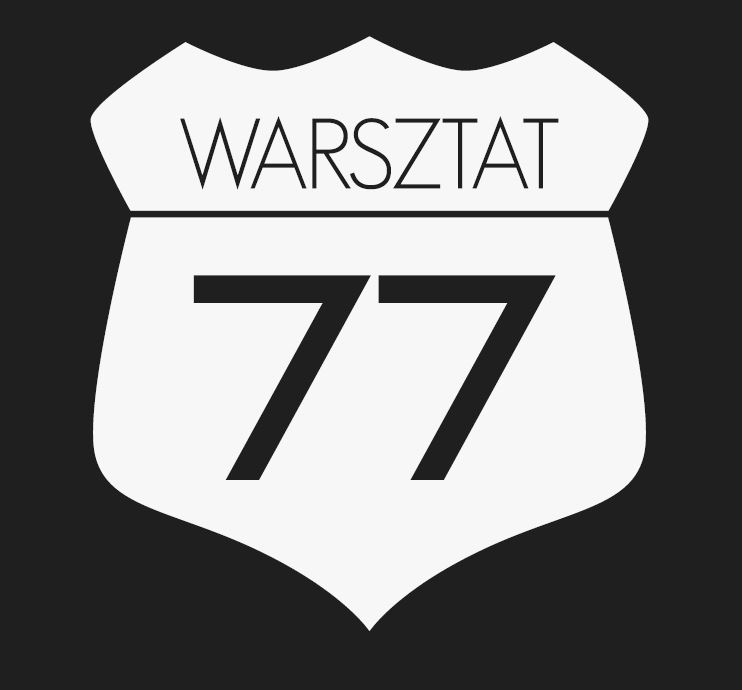

510 417 705
Kontakt / lokalizacja
Warsztat 77 Serwis Opon
Zbrojarzy 77
30-412 Kraków
betkowski_krzysztof@wp.pl510 417 705
Z powodu budowy trasy łagiewnickiej w tym momencie dojazd do naszego zakładu jest możliwy tylko od ulicy TURONIA.
Jesteśmy otwarci:
pon - pią 8 - 18
sob 8 - 15